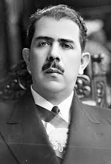

Historia
En la materia de Conciencia Historia, vemos el como pasaron los hechos del pasado de la historia de mexico tales como la etapa historica de mexico que abarca de 1928-
1946, en este periodo de tiempo pasan varios hechos historicos, como la muerte de obregon que sucedio en 1928 y obligo a Calles a declarar el fin de los gobiernos de "hombres fuertes", forzando la creacion de leyes e instituciones que evitaran mas guerra civiles por la presidencia
igualmente en ese mismo año empieza el Maximato, este fue una etapa de la historia de Mexico en la que, aunque Plutarco Elias Calles ya no era presidente, ejercia un fuerte control politico e influencia sobre el gobierno, el año siguiente (1929) se funda el PNR, el cual busco institucionalizar la Revolucion, permitiendo a las elites politicas negociar el poder sin recurrir a las armas
, en 1934 Lazaro cardenas asuma la presidencia de Mexico y eso marco el fin del Maximato ya que inicio un presidencialismo fuerte que priorizo la justicia social y el apoyo a los trabajadores, en 1936 Lazaro Cardenas expulso a Calles del pais para acabar con su control detras de la silla
presidencial, logrando que la figura del presidente fuera la unica autoridad maxima y real en mexico, en 1938 en el mes de marzo Nace el PRM, este consolido un modelo corporativo donde el Estado organizo a la sociedad en diferentes sectores, asegurando el control politico y una estabilidad social,
y en el mes de marzo de este mismo año(1938), tras un conflicto con empresas extranjeras, Cardenas nacionalizo el pretroleo, lo que otorgo soberania energetica al pais y unifico a la nacion bajo un fuerte sentimiento de orgullo nacional y esta etapa acaba en 196, con el surgimiento del PRI, el cual simbolizo el paso del poder de los militares a los civiles universitario, priorizando la estabilidad politica y la industrializacion urbana sobre la reforma agraria.

Menu